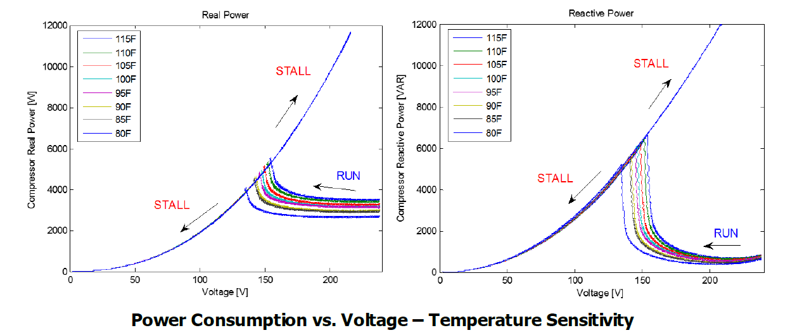
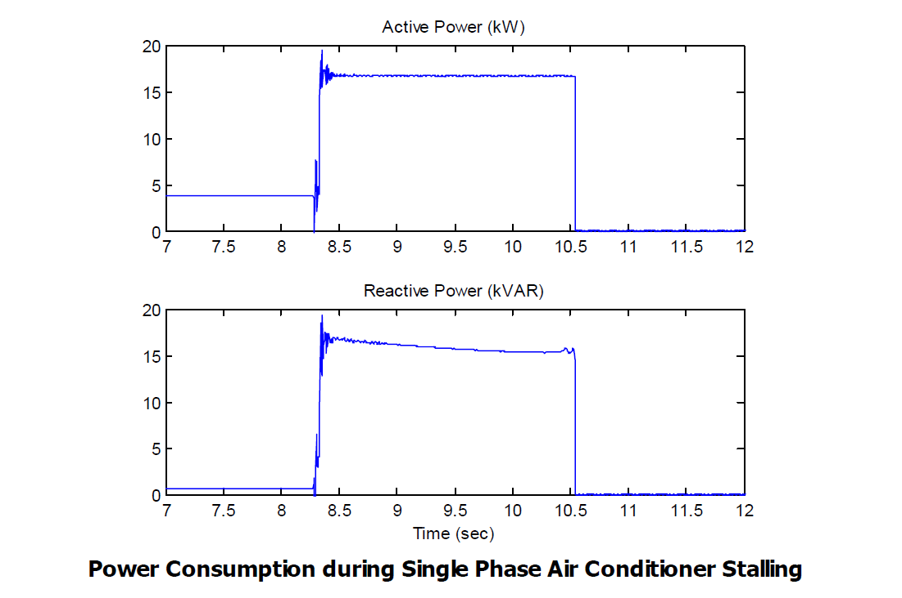

Motor Stall Model#
{kind=link}
Controller overview#
This controller implments the motor stall model for single phase motors (residential air conditioners) and models two states of operations i.e. run state and stall state. As supply voltage is decreased, the motor slowly begins to consume a higher amount of active and reactive power. At some voltage level (“stall voltage”), the supply voltage is no longer adequate to maintain stable motor operation and the motor “stalls” (stops). There is insufficient motor torque to overcome the load torque and therefore the motor stalls. Head pressure is built up in the compressor, so the motor is unable to reaccelerate until that pressure is reduced. At this point, the motor draws extremely high amounts of current particularly when the voltage recovers to normal operating level. This is because once the motor stops (stalls), its electrical behavior is essentially that of a resistive plus inductive load (i.e., a shunt reactor to ground). Ambient temperature also plays a clear role in stall characteristic.
{kind=link}
Controller model#
- pydantic model PyDSS.pyControllers.models.MotorStallSettings[source]#
Show JSON schema
{ "title": "MotorStallSettings", "type": "object", "properties": { "k_p1": { "default": 0, "description": "Real power constant for running state 111", "title": "K P1", "type": "number" }, "n_p1": { "default": 1.0, "description": "Real power exponent for running state 1", "title": "N P1", "type": "number" }, "k_p2": { "default": 12.0, "description": "Real power constant for running state 2", "title": "K P2", "type": "number" }, "n_p2": { "default": 3.2, "description": "Real power exponent for running state 2", "title": "N P2", "type": "number" }, "k_q1": { "default": 6.0, "description": "Reactive power constant for running state 1", "title": "K Q1", "type": "number" }, "n_q1": { "default": 2.0, "description": "Reactive power exponent for running state 1", "title": "N Q1", "type": "number" }, "k_q2": { "default": 11.0, "description": "Reactive power constant for running state 2", "title": "K Q2", "type": "number" }, "n_q2": { "default": 2.5, "description": "Reactive power exponent for running state 2.", "title": "N Q2", "type": "number" }, "t_th": { "default": 4.0, "description": "Varies based on manufacturer and external factors - sensitivity analysis required", "title": "T Th", "type": "number" }, "f_rst": { "default": 0.2, "description": "Captures diversity in load; also based on testing (fraction of motors capable of restart).", "title": "F Rst", "type": "number" }, "lf_adj": { "default": 0.0, "description": "Load factor adjustment to the stall voltage10", "title": "Lf Adj", "type": "number" }, "t_th1t": { "default": 0.7, "description": "Assumed tripping starting at 70% temperature", "title": "T Th1T", "type": "number" }, "t_th2t": { "default": 1.9, "description": "Assumed all tripped at 190% temperature", "title": "T Th2T", "type": "number" }, "p_fault": { "default": 3.5, "description": "Active power multiplier post fault.", "maximum": 5.0, "minimum": 3.0, "title": "P Fault", "type": "number" }, "q_fault": { "default": 5.0, "description": "Reactive power multiplier post fault.", "maximum": 7.0, "minimum": 3.0, "title": "Q Fault", "type": "number" }, "v_stall": { "default": 0.55, "description": "Stall voltage (range) based on laboratory testing", "maximum": 0.6, "minimum": 0.45, "title": "V Stall", "type": "number" }, "v_break": { "default": 0.86, "description": "Compressor motor 'breakdown' voltage (pu)", "title": "V Break", "type": "number" }, "v_rstrt": { "default": 0.95, "description": "Reconnect when acceptable voltage met", "title": "V Rstrt", "type": "number" }, "t_stall": { "default": 0.032, "description": "Stall time (range) based on laboratory testing", "title": "T Stall", "type": "number" }, "t_restart": { "default": 0.3, "description": "Induction motor restart time is relatively short", "title": "T Restart", "type": "number" }, "rated_pf": { "default": 0.939, "description": "Assumed slightly inductive motors load", "title": "Rated Pf", "type": "number" }, "r_stall_pu": { "default": 0.1, "description": "Based on laboratory testing results of residential air-conditioners.", "title": "R Stall Pu", "type": "number" }, "x_stall_pu": { "default": 0.1, "description": "Based on laboratory testing results of residential air-conditioners.", "title": "X Stall Pu", "type": "number" } } }
- Fields:
- field f_rst: float = 0.2#
Captures diversity in load; also based on testing (fraction of motors capable of restart).
- field k_p1: float = 0#
Real power constant for running state 111
- field k_p2: float = 12.0#
Real power constant for running state 2
- field k_q1: float = 6.0#
Reactive power constant for running state 1
- field k_q2: float = 11.0#
Reactive power constant for running state 2
- field lf_adj: float = 0.0#
Load factor adjustment to the stall voltage10
- field n_p1: float = 1.0#
Real power exponent for running state 1
- field n_p2: float = 3.2#
Real power exponent for running state 2
- field n_q1: float = 2.0#
Reactive power exponent for running state 1
- field n_q2: float = 2.5#
Reactive power exponent for running state 2.
- field p_fault: float = 3.5#
Active power multiplier post fault.
- Constraints:
ge = 3.0
le = 5.0
- field q_fault: float = 5.0#
Reactive power multiplier post fault.
- Constraints:
ge = 3.0
le = 7.0
- field r_stall_pu: float = 0.1#
Based on laboratory testing results of residential air-conditioners.
- field rated_pf: float = 0.939#
Assumed slightly inductive motors load
- field t_restart: float = 0.3#
Induction motor restart time is relatively short
- field t_stall: float = 0.032#
Stall time (range) based on laboratory testing
- field t_th: float = 4.0#
Varies based on manufacturer and external factors - sensitivity analysis required
- field t_th1t: float = 0.7#
Assumed tripping starting at 70% temperature
- field t_th2t: float = 1.9#
Assumed all tripped at 190% temperature
- field v_break: float = 0.86#
Compressor motor ‘breakdown’ voltage (pu)
- field v_rstrt: float = 0.95#
Reconnect when acceptable voltage met
- field v_stall: float = 0.55#
Stall voltage (range) based on laboratory testing
- Constraints:
ge = 0.45
le = 0.6
- field x_stall_pu: float = 0.1#
Based on laboratory testing results of residential air-conditioners.
- model_computed_fields: ClassVar[dict[str, ComputedFieldInfo]] = {}#
A dictionary of computed field names and their corresponding ComputedFieldInfo objects.